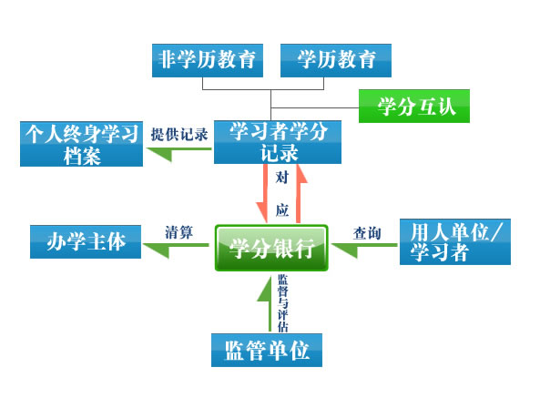

您现在的位置： 首页 >> 学分银行
“学分银行”是一种模拟或是借鉴银行的功能特点，帮助学生存储学分并将其兑换为相应学历/非学历证书的一种管理模式。它突破传统的专业限制和学习时段限制，使学生能够自由选择学习内容、学习时间和学习地点，将学生完成学业的时间从固定学习制变为弹性学习制，同时将学历教育、技能培训以及其他教育形式结合起来，实现不同类型学习成果的互认与衔接，是推动终身学习发展的重要手段。
 服务机制
唐山教育网版权所有 冀ICP备：11021833号-2
主办：唐山社区教育学院 承办：唐山广播电视大学
地址：唐山市建设北路九十二号 邮编：063000 电话：0315-2059277
技术支持：国家开放大学数字化学习资源中心